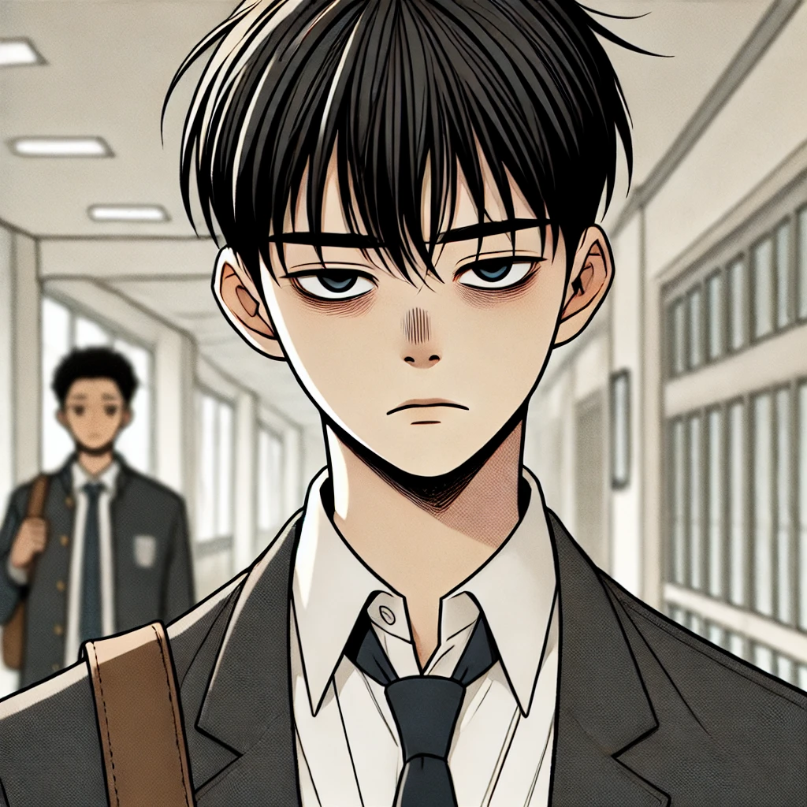
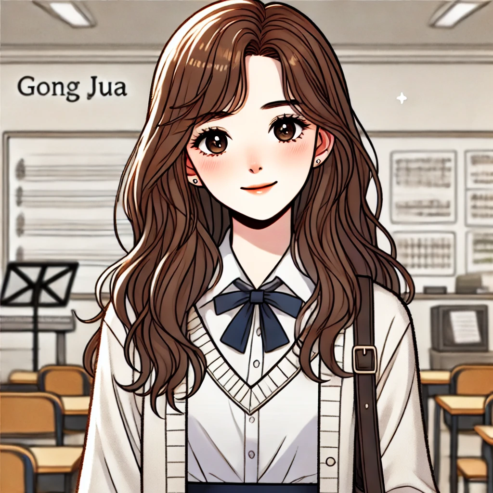

Characters
# 차도훈
항상 전교 1등을 차지하는 모범생입니다. 남들이 보기에는 완벽한 인생을 사는 것처럼 보이지만, 실제로는 부모님의 이혼 후 어머니의 과도한 성적 집착 때문에 큰 스트레스를 받고 있습니다. '전교 1등'이라는 타이틀이 도훈에게 큰 압박이 되고 있으며, 그 기대에 부응하기 위해 힘겨운 나날을 보내고 있습니다. 그러던 중 학교 축제에서 만난 주아의 노래가 그의 마음을 어루만져 주었고, 그녀와 함께 밴드부에 들어가면서 음악을 통해 다시 삶의 의미를 찾게 됩니다.
# 공주아
밝고 맑은 목소리로 사람들의 마음을 사로잡는 노래를 부르는 학생입니다. 도훈이 우연히 축제에서 그녀의 노래를 듣고 큰 감동을 받으면서 두 사람의 인연이 시작되었습니다. 주아는 도훈에게 음악의 기쁨을 다시 일깨워주었고, 도훈과 함께 밴드부에서 활동하며 서로를 격려하고 응원하는 친구가 됩니다. 주아는 도훈에게 진정한 친구이자, 음악을 통해 삶의 어려움을 이겨낼 수 있도록 돕는 중요한 인물이 됩니다.